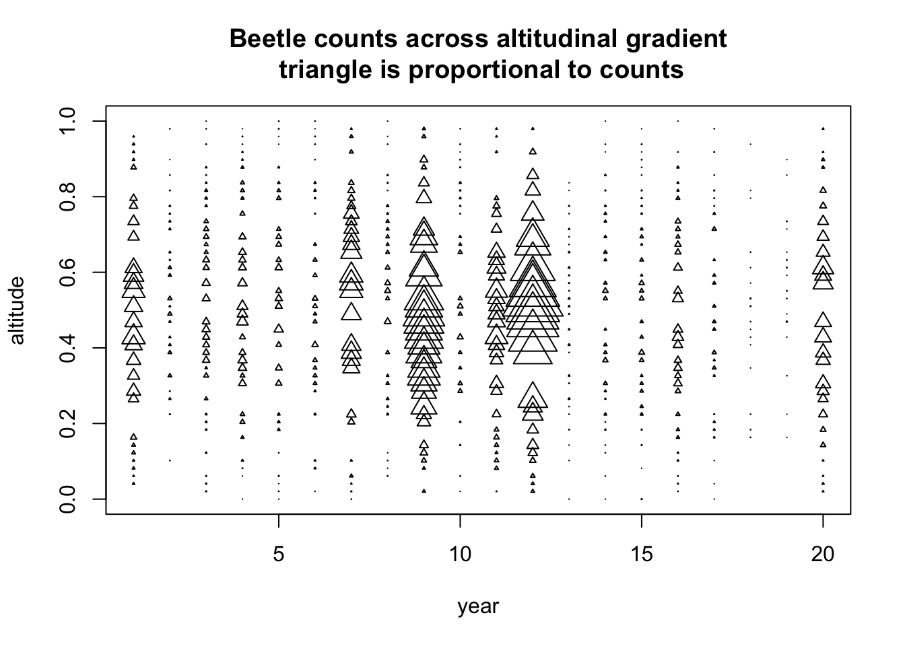
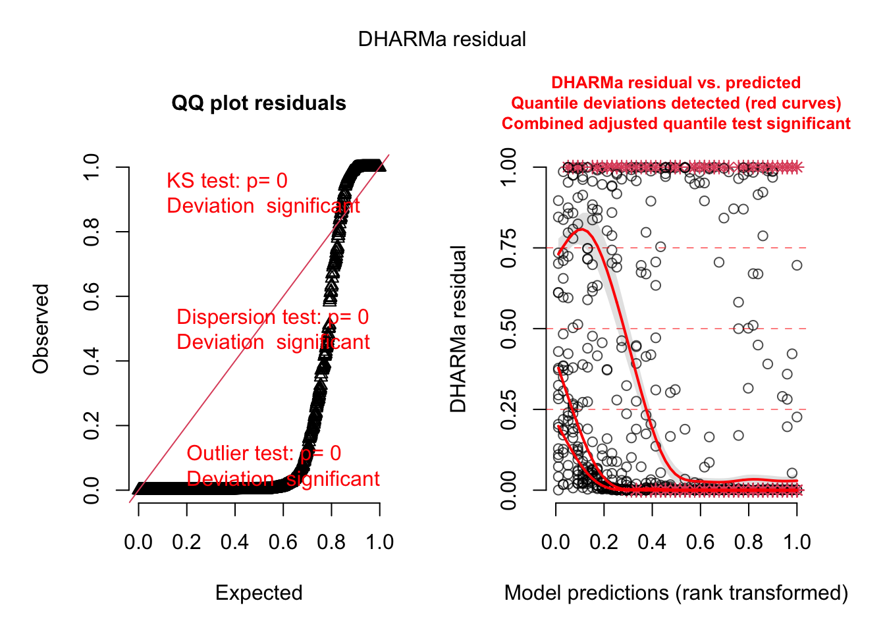
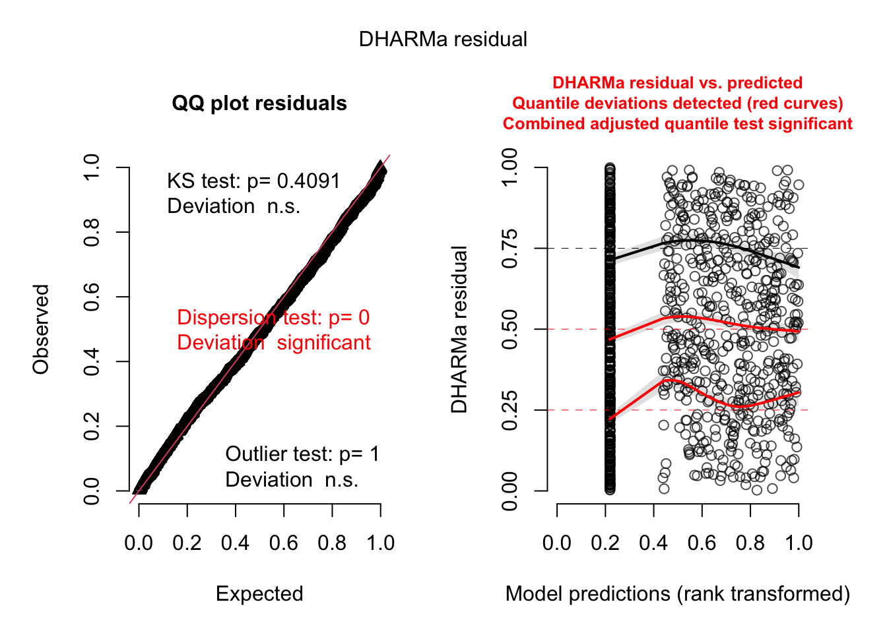

Bayesian Workflow, from Gelman, A., Vehtari, A., Simpson, D., Margossian, C. C., Carpenter, B., Yao, Y., ... & Modrák, M. (2020). Bayesian workflow. https://arxiv.org/pdf/2011.01808.pdf
5.1 Picking an initial model
An initial model will consist of a model structure and priors. For priors, see previous section on prior choice. For the initial model structure, you need to know what structures are available and what their advantage / disadvantage are. This is the same as for all statistical analysis. Thus,
5.2 Prior predictive checks
5.3 Validate computation
Convergence diagnostics
Fake data simulation
Simulation-based calibration
5.4 Posterior model checks
5.4.1 Prior sensitivity
Prior sensitivity means that you will check to what extend results are driven by the prior
5.4.2 Posterior predictive checks / residuals
# This first part creates a dataset with beetles counts across an altitudinal gradient (several plots each observed several years), with a random intercept on year and zero-inflation. altitude =rep(seq(0,1,len =50), each =20)dataID =1:1000spatialCoordinate =rep(seq(0,30, len =50), each =20)# random effects + zeroinflationplot =rep(1:50, each =20)year =rep(1:20, times =50)yearRandom =rnorm(20, 0, 1)plotRandom =rnorm(50, 0, 1)overdispersion =rnorm(1000, sd =0.5)zeroinflation =rbinom(1000,1,0.6)beetles <-rpois(1000, exp( 0+12*altitude -12*altitude^2# + overdispersion + plotRandom[plot]+ yearRandom[year]) * zeroinflation )data =data.frame(dataID, beetles, altitude, plot, year, spatialCoordinate)plot(year, altitude, cex = beetles/50, pch =2, main ="Beetle counts across altitudinal gradient\n triangle is proportional to counts")

library(R2jags)
Loading required package: rjags
Loading required package: coda
Linked to JAGS 4.3.0
Loaded modules: basemod,bugs
Attaching package: 'R2jags'
The following object is masked from 'package:coda':
traceplot
plotSimulatedResiduals is deprecated, please switch your code to simply using the plot() function
DHARMa:testOutliers with type = binomial may have inflated Type I error rates for integer-valued distributions. To get a more exact result, it is recommended to re-run testOutliers with type = 'bootstrap'. See ?testOutliers for details
qu = 0.5, log(sigma) = -2.532538 : outer Newton did not converge fully.

GLMM with random intercept on year, observation-level RE for overdispersion, and zero-inflation
modelstring="model { # Likelihood for (i in 1:nobs) { lambda[i] <- exp(intercept + alt * altitude[i] + alt2 * altitude[i] * altitude[i] + Ryear[year[i]] + RID[i] ) * Zero[i] + 0.00000001 beetles[i]~dpois(lambda[i]) } # Fixed effect priors intercept ~ dnorm(0,0.0001) alt ~ dnorm(0,0.0001) alt2 ~ dnorm(0,0.0001) # Random effects for (i in 1:nyears) { Ryear[i]~dnorm(0,sigmaYear) } for (i in 1:nobs) { RID[i]~dnorm(0,sigmaID) } # Variance priors sigmaYear~dgamma(1,2) sigmaID~dgamma(0.001,0.001) # Zeroinflation for (i in 1:nobs) { Zero[i]~dbern(zeroMu + altZero * altitude[i]) } zeroMu ~ dunif(0,1) altZero ~ dnorm(0,0.0001) # Posterior predictive simulations for (i in 1:nobs) { beetlesPred[i]~dpois(lambda[i]) } Prediction <- sum(beetlesPred)}" model=jags(model.file =textConnection(modelstring), data=modelData, n.iter=10000, parameters.to.save =c("intercept", "alt", "alt2", "beetlesPred", "Ryear", "sigmaYear", "lambda", "altZero", "zeroMu"), DIC = F)
Warning in jags.model(model.file, data = data, inits = init.values, n.chains =
n.chains, : Unused variable "dataID" in data
Warning in jags.model(model.file, data = data, inits = init.values, n.chains =
n.chains, : Unused variable "plot" in data
Warning in jags.model(model.file, data = data, inits = init.values, n.chains =
n.chains, : Unused variable "spatialCoordinate" in data
Warning in jags.model(model.file, data = data, inits = init.values, n.chains =
n.chains, : Unused variable "nplots" in data
Compiling model graph
Resolving undeclared variables
Allocating nodes
Graph information:
Observed stochastic nodes: 1000
Unobserved stochastic nodes: 3027
Total graph size: 10237
Initializing model
library(DHARMa) simulations = model$BUGSoutput$sims.list$beetlesPred pred =apply(model$BUGSoutput$sims.list$lambda, 2, median)dim(simulations)
plotSimulatedResiduals is deprecated, please switch your code to simply using the plot() function

5.4.3 Validation or cross-validation
Validation or cross-validation means that you test the performance of the model on data to which it was not fit. Purpose is to get an idea of overfitting.